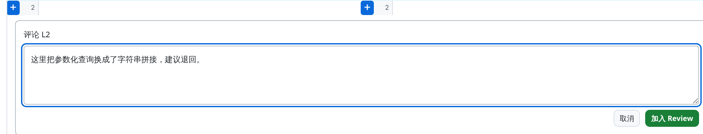
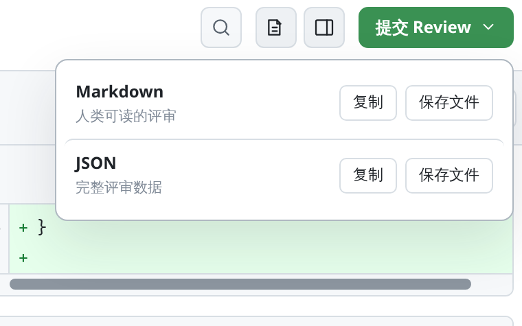
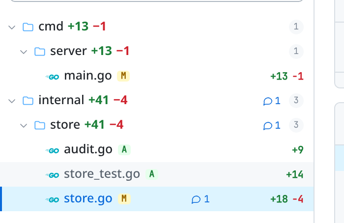
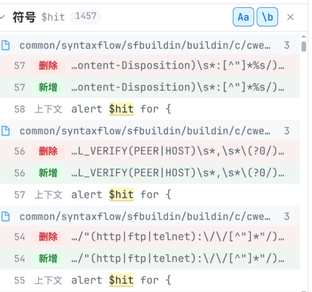

Read the diff. Write the note. Hand it to the agent.
Local diff review for coding agents.
- single static binary
- runtime needs only git
- reviews stay in the browser
Run it
You
$ intentflow
· 分支 feat/site-and-tests；基线 merge-base(master@15c4cd19)（领先 4 个提交）
已包含 master 最新提交
· 比较 15c4cd19 → 89268602，18 个改动文件
review 工作台:
http://127.0.0.1:8123Agent
“Install intentflow from github.com/wlingze/intentflow, then review my changes.”
The skill installs it, picks the range flags, and gives you the URL.
Comments
Comment the exact line.

Copy
One keystroke, whole review.

Git ranges
From history, not a picker.

Symbols
No index, no LSP.

Install
Linux / macOS
installer=$(curl -fsSL https://wlingze.github.io/intentflow/install.sh) &&
sh -c "$installer"
Windows (PowerShell)
& ([scriptblock]::Create((Invoke-RestMethod https://wlingze.github.io/intentflow/install.ps1 -ErrorAction Stop)))The installer checks SHA-256 before unpacking and runs `--version` after installation.
What ships today
| Stage | Content | State |
|---|---|---|
| 01 | Text diff and a local review store | Available |
| 02 | SSA fact layer | Not started |
| 03 | Behaviour graph | Not started |
| 04 | LLM narrative layer | Not started |
Stages two to four are not built.